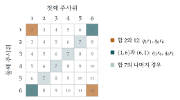

STEP I 1999, 문제 12
계속 읽기 전에 문제를 먼저 읽어 보자. 문제는 STEP Support Programme의 문제 데이터베이스에 있다: step.maths.org/questions/99-s1-q12
도입
공정한 주사위(fair dice) 두 개를 던지면 합이 \(7\)이 나올 가능성은 합이 \(2\)가 나올 가능성의 여섯 배이다. 보드게임 설계자들은 때때로 그렇지 않기를 바란다. 주사위를 조작하여(loaded, 어떤 면이 더 자주 나오도록 무게를 조절하여) \(2\)부터 \(12\)까지의 모든 합이 같은 확률 \(\frac{1}{11}\)을 갖게 할 수 있을까? 열두 개의 확률을 자유롭게 정할 수 있으니 여지는 충분해 보인다.
답은 “불가능하다”이며, 그 증명은 보석 같다. 열한 가지 합 가운데 세 가지와 부등식 \(x + \frac1x \geq 2\)만을 사용한다. 이 증명은 어떤 것이 불가능함을 증명하는 방법의 모범이 되는데, 이런 증명은 어떤 것이 가능함을 보이는 것보다 더 어렵고 더 흥미로운 경우가 많다.
시작하기 전에
\(x > 0\)일 때 \(x + \frac1x \geq 2\)를 어떻게 증명하겠는가? 등호는 언제 성립하는가?
양변에 \(x > 0\)을 곱하면 부등식은 \(x^2 + 1 \geq 2x\), 즉 \((x - 1)^2 \geq 0\)이 되고, 이는 참이다. 등호는 \(x = 1\)일 때만 성립한다. (또는 \(x + \frac1x - 2 = \bigl(\sqrt x - \frac{1}{\sqrt x}\bigr)^2\)을 이용해도 된다.) 이것은 가장 단순한 형태의 산술-기하 평균 부등식(AM–GM inequality)이다. 즉 \(x\)와 \(\frac1x\)의 산술평균은 둘의 기하평균(geometric mean)인 \(1\) 이상이다.
차근차근 풀기
단계 1 양 끝의 합
합 \(2\)가 나오는 경우는 몇 가지인가? 합 \(12\)는? 그 확률을 \(q_i\)와 \(r_j\)로 나타내어 보아라.
합 \(2\)가 나오려면 두 주사위 모두 \(1\)이 나와야 하고, \(12\)가 나오려면 둘 다 \(6\)이 나와야 하므로 \(\mathrm{P}(2) = q_1r_1\)이고 \(\mathrm{P}(12) = q_6r_6\)이다.
귀류법(proof by contradiction)을 쓰기 위해, 열한 가지 합이 모두 같은 가능성, 즉 각각 확률 \(\frac{1}{11}\)을 갖는다고 가정하자. 그러면 \[q_1r_1 = \frac{1}{11}, \qquad q_6r_6 = \frac{1}{11}.\] 특히 \(q_1\), \(r_1\), \(q_6\), \(r_6\) 네 값은 모두 양수이다.
단계 2 가운데 합
합 \(7\)을 만드는 방법은 여섯 가지이다. 그중 면 \(1\)과 \(6\)만 관련된 두 가지는 무엇인가? 위의 식을 이용하여 그 확률을 나타내어 보아라.
합 \(7\)에는 결과 (\(1\), \(6\))과 (\(6\), \(1\))이 포함되므로 \[\mathrm{P}(7) \geq q_1r_6 + q_6r_1.\] 이제 1단계의 식을 이용하여 비를 끌어들이자. \(q_1 = \frac{1}{11r_1}\)이고 \(q_6 = \frac{1}{11r_6}\)이므로 \[q_1r_6 + q_6r_1 = \frac{1}{11}\Bigl(\frac{r_6}{r_1} + \frac{r_1}{r_6}\Bigr) \geq \frac{1}{11} \times 2 = \frac{2}{11},\] 이다. 여기서 \(x = r_6/r_1 > 0\)으로 두고 \(x + \frac1x \geq 2\)를 사용하였다. 따라서 \(\mathrm{P}(7) \geq \frac{2}{11}\)이고, 이는 \(\mathrm{P}(7) = \frac{1}{11}\)에 모순이다. 그러므로 모든 합이 같은 가능성을 가질 수는 없다.■
증명이 성립하게 만든 것이 무엇인지 살펴보자. \(2\)와 \(12\)가 \(7\)만큼 나올 가능성을 갖게 하려면 \(1\)과 \(6\)이 꽤 자주 나와야 하고, 그러면 “혼합된” 결과 (\(1\), \(6\))과 (\(6\), \(1\))만으로도 \(7\)이 너무 자주 나오게 된다. 그림 9.13.1에 관련된 칸들이 나타나 있다.

단계 3 주사위 하나를 두 번 던지기
주사위 하나를 두 번 던질 때 두 수가 같을 확률을 \(q_j\)로 나타내면 무엇인가? 공정한 주사위라면 얼마인가?
두 번의 결과가 같을 확률은 \(q_1^2 + q_2^2 + \cdots + q_6^2\)이다. 공정한 주사위라면 이 값은 \(6 \times \frac{1}{36} = \frac16\)이고, 이미 \(\frac{1}{36}\)보다 훨씬 크다.
주사위를 조작하여 \(\sum q_j^2\)을 \(\frac16\)보다 작게 만들 수 있는가? \(\sum q_j = 1\)임을 알고 있다.
\(q_j = \frac16 + e_j\)로 쓰자. 여기서 편차(deviation) \(e_j\)들의 합은 \(0\)이다. 그러면 \[\sum q_j^2 = \sum\Bigl(\frac{1}{36} + \frac{e_j}{3} + e_j^2\Bigr) = \frac16 + \frac13\sum e_j + \sum e_j^2 = \frac16 + \sum e_j^2 \geq \frac16.\] 따라서 같은 수가 반복될 확률은 항상 \(\frac16\) 이상이고, 등호는 공정한 주사위일 때만 성립한다. 이 확률이 \(\frac{1}{36}\)보다 작을 수는 결코 없다.■
돌아보기
귀류법. 모든 합이 같은 가능성을 갖는다고 가정하고 불가능한 결론을 이끌어 내었다.
필요한 것만 사용하라. 열한 개의 식 가운데 세 개로 충분했다. 알맞은 식을 고르는 것이 핵심 단계였다.
부등식은 불가능성을 증명한다. (i)에서는 산술-기하 평균 부등식이, (ii)에서는 “제곱의 합은 음이 아니다”라는 사실이 가능성의 모든 경우를 한꺼번에 배제하였다.
숨은 수학
다항식을 이용한 증명
이번에는 9.6 절의 생성함수(generating function)를 이용한 완전히 다른 증명을 보자. \(Q(x) = q_1x + \cdots + q_6x^6\), \(R(x) = r_1x + \cdots + r_6x^6\)이라 하자. 모든 합의 확률이 \(\frac{1}{11}\)이라면 \[Q(x)R(x) = \frac{x^2 + x^3 + \cdots + x^{12}}{11} = \frac{x^2}{11}\bigl(1 + x + \cdots + x^{10}\bigr).\] 이다. 그런데 \(Q(x)/x\)는 실수 계수를 갖는 \(5\)차 다항식이고, 차수가 홀수인 실계수 다항식은 모두 실근을 갖는다(그래프가 \(-\infty\)에서 \(+\infty\)로, 또는 그 반대로 가기 때문이다). 따라서 좌변은 \(0\)이 아닌 실근을 갖는다. 하지만 \(1 + x + \cdots + x^{10} = \frac{x^{11} - 1}{x - 1}\)이고, 그 근은 \(1\)을 제외한 \(11\)차 단위근(roots of unity)이며, 그중 실수인 것은 없다. 모순이다. 같은 논증으로, \(n - 1\)이 홀수일 때, 즉 \(n\)이 짝수일 때 두 개의 \(n\)면체 주사위를 어떻게 조작해도 합들이 같은 가능성을 갖게 할 수 없음을 보일 수 있다. (\(n\)이 홀수이면 다항식 논증에 더 많은 작업이 필요하지만, 위의 산술-기하 평균 증명은 모든 \(n \geq 2\)에 대해 성립한다.)
충돌 확률
(ii)에 나온 양 \(\sum q_j^2\), 즉 서로 독립인 두 번의 추출 결과가 같을 확률을 분포의 충돌 확률(collision probability)이라 한다. (ii)는 이 값이 균등분포(uniform distribution)에서 가장 작다는 것을 보여 준다. 충돌 확률은 분포가 얼마나 집중되어 있는지를 측정한다. 생태학에서 \(\sum q_j^2\)은 심프슨(Simpson)의 다양성 지수인데, 여기서 \(q_j\)는 서식지에서 종 \(j\)가 차지하는 비율이다. 경제학에서는 시장 집중도를 나타내는 Herfindahl 지수이고, 암호학에서는 비밀번호 분포를 얼마나 쉽게 추측할 수 있는지를 측정한다. 또한 이것은 9.9 절 끝의 언급을 설명해 준다. 생일의 확률이 균등하지 않으면 생일이 같은 사람이 있을 가능성은 커질 수밖에 없다.
수학에서 가장 유명한 결과 가운데 일부는 어떤 것을 할 수 없다고 말한다. 제곱하여 \(2\)가 되는 분수는 없다. 자와 컴퍼스만으로 하는 작도(ruler-and-compass construction)로는 모든 각을 삼등분할 수 없다. 거듭제곱근(radicals)을 이용한 공식으로 모든 5차방정식(quintic)을 풀 수는 없다. 모든 수학적 명제를 판정하는 알고리즘은 없다. 이 결과들은 각각 그 분야를 바꾸어 놓았다. 어떤 방법도 통하지 않음을 증명하려면 가능한 방법 전체의 공간을 이해해야 하기 때문이다. 조작된 주사위 문제는 그 축소판이다. 모든 조작을 배제하기 위해 모든 조작이 따라야 하는 불변 성질(invariant, 산술-기하 평균 부등식)이 필요했다.
사고 기술
어떤 매개변수 선택도 통하지 않음을 보이려면, 통하는 선택이 있다고 가정하고, 서로 충돌하는 몇 가지 조건을 골라낸 뒤, 부등식을 이용하여 그 조건들이 동시에 성립할 수 없음을 보여라.
대학에서는 귀류법과 부등식의 결합이 대상의 존재하지 않음을 증명하는 표준적인 방법이다. 해석학(analysis), 조합론(combinatorics), 최적화(optimisation)에서 그러한데, 이 분야들에서는 산술-기하 평균 부등식이나 코시-슈바르츠 부등식(Cauchy–Schwarz inequality) 같은 부등식이 달성할 수 있는 것의 한계를 정한다.
더 도전하기
코시-슈바르츠. 코시-슈바르츠 부등식 \(\bigl(\sum a_jb_j\bigr)^2 \leq \sum a_j^2\sum b_j^2\)에 \(a_j = q_j\), \(b_j = 1\)을 대입하여 (ii)를 한 줄로 증명하여라.
서로 다른 두 주사위. 서로 다른 조작된 주사위 두 개를 각각 한 번씩 던질 때, 두 주사위에서 같은 수가 나올 확률이 \(\frac16\)보다 작을 수 있는가? \(0\)이 될 수 있는가?
다른 눈을 가진 주사위의 균등한 합. 면에 다른 수를 적으면 두 주사위의 합이 같은 가능성을 가질 수 있음을 보여라. 한 주사위에는 \(0, 1, 2, 3, 4, 5\)를, 다른 주사위에는 \(0, 6, 12, 18, 24, 30\)을 적어 보아라. 어떤 합들이 나오는가? 이것이 왜 문제의 결론에 모순되지 않는가?
주사위 세 개. 면에 \(1\)부터 \(6\)까지 적힌 조작된 육면체 주사위 세 개로 \(3\)부터 \(18\)까지의 모든 합이 같은 가능성을 갖게 할 수 있는가? (힌트: 합 \(3\), \(8\), \(13\), \(18\)과 여섯 개의 수에 대한 산술-기하 평균 부등식을 이용하여라. 이번에는 다항식 증명이 왜 통하지 않는가?)
더 읽을거리
J. Michael Steele, The Cauchy–Schwarz Master Class (Cambridge University Press). 산술-기하 평균 부등식에서 출발하는 아름다운 부등식 입문서이다.
Geoffrey Grimmett & Dominic Welsh, Probability: An Introduction (Oxford University Press). 생성함수와 위와 같은 증명에서의 활용을 다룬다.
Ian Stewart, Galois Theory (CRC Press)의 앞부분 장들. 가장 유명한 불가능성 증명인 5차방정식에 관한 증명을 다룬다.